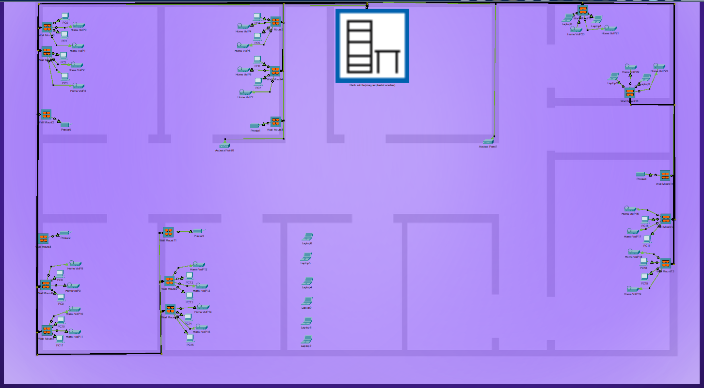

Webwiz opdracht Datacom & Netwerken

Situatie
Webwiz is een groeiend bedrijf dat een nieuw kantoorgebouw betrekt, met een gelijkvloers en een eerste verdieping. Er werken 24 mensen, verdeeld over 6 kantoren. Elke werkplek heeft een computer en een VoIP-telefoon, en in elk kantoor staat een multifunctionele printer. Het bedrijf heeft 20 desktops, 10 laptops (waarvan 6 uitleenbare flexi-laptops die draadloos moeten werken) en 2 servers waar enkel gemachtigde mensen fysiek toegang toe mogen hebben.
Het eerste voorstel voor het netwerk voldeed aan alle eisen, maar hield geen rekening met gestructureerd bekabelen. Alle toestellen waren rechtstreeks met een switch verbonden. Dat zorgt voor een kluwen van kabels, onduidelijkheid over welke kabel waar naartoe gaat en problemen bij elke aanpassing. Mijn opdracht was een netwerk uit te tekenen volgens de principes van gestructureerd bekabelen, in duo met een medestudent.
Aanpak
Ik werkte het ontwerp uit in Packet Tracer, vertrekkend van een startbestand met de plattegrond van het gebouw. Ik werkte in stappen:
- Aansluitpunten bepalen: berekend hoeveel aansluitpunten er nodig zijn voor computers, VoIP-telefoons en printers, met een marge voor toekomstige uitbreiding.
- Outlets en patchpanelen: wandaansluitingen (outlets) bij de eindgebruikers voorzien en patchpanelen in het rack, zodat de kabels vast liggen en toestellen in het rack worden omgeschakeld.
- Afgesloten rackruimte: de switches in een rack in een afgesloten kamer geplaatst, zodat enkel gemachtigde personen er aan kunnen.
- Afstanden en kabeltype: rekening gehouden met de af te leggen afstanden om het kabeltype en de plaats van het rack te bepalen.
- Bekabelingsplan: het plan in Packet Tracer uitgetekend met bend points, zodat de kabels netjes langs de muren lopen.
- Rack en patchplan: uitgewerkt welke toestellen in het rack komen, hoeveel U ze innemen en hoe de patchpanelen en switches verbonden zijn.
- Controle: het ontwerp getest aan de praktische scenario's, zoals een nieuwe werkplek, extra wifi en een nieuwe printer.
Resultaat
Het resultaat is een gestructureerd bekabeld netwerk dat voldoet aan de eisen van Webwiz en eenvoudig uit te breiden en te beheren is.
- Elke werkplek en elke printer heeft een eigen aansluitpunt (outlet), en alle bekabeling komt samen in één afgesloten rackruimte.
- De flexi-laptops werken draadloos via access points.
- Een extra toestel aansluiten is eenvoudig: je patcht het in het rack en trekt geen nieuwe kabel.
- Dankzij de patchpanelen en duidelijke verbindingen weet je welke kabel waar naartoe gaat, waardoor je problemen sneller opspoort.
- Enkel gemachtigden hebben toegang tot de switches en servers, en er liggen geen losse kabels meer op de werkplekken.